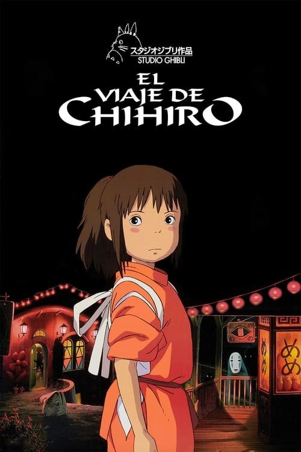

El viaje de Chihiro (2001)

Plataforma: Amazon Prime Video
Puntuación IMDb: 8.6/10
Duración: 2h 5m
Género: Fantasía, Aventura
Sinopsis Rápida
Chihiro, una niña gruñona, se encuentra en un mundo mágico lleno de espíritus y criaturas fantásticas, donde deberá superar desafíos para regresar a casa.
Sinopsis Detallada
Una niña de diez años se pierde en un mundo mágico y debe aprender a valerse por sí misma y adaptarse a la convivencia con extraños seres fantásticos. 'El viaje de Chihiro' es una película visualmente impresionante y narrativamente rica, con temas sobre la amistad, la madurez y el descubrimiento personal. La película es una obra maestra de la animación que explora temas profundos en un lenguaje accesible para todas las edades.
¿Por qué tenés que verla?
- Una película visualmente asombrosa y una experiencia cinematográfica inolvidable.
- El estilo de animación único de Hayao Miyazaki y Studio Ghibli.
- Su impacto en la animación mundial y su estatus como una de las mejores películas de la historia.
- Una historia conmovedora sobre el crecimiento, la valentía y la amistad.
Idea Extra
Análisis de los temas ambientales y espirituales presentes en 'El viaje de Chihiro'.